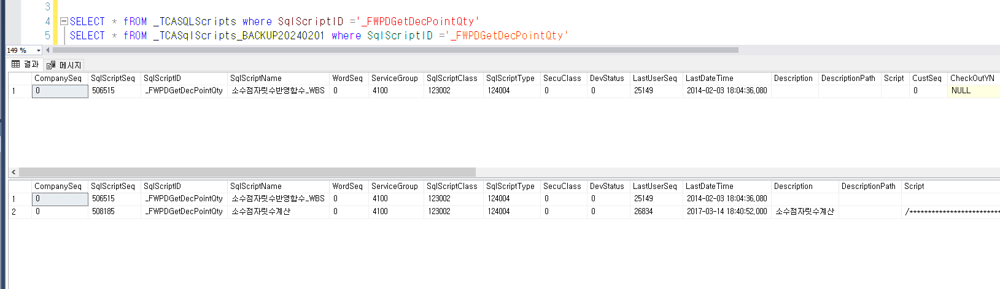

패치 오류 PK_TCASQLScriptsDepends
_TCASqlScripts 테이블에 _FWPDGetDecPointQty 명칭을 가진 건이 2개 존재 => 1개 삭제
SELECT * fROM _TCASQLScripts where SqlScriptID ='_FWPDGetDecPointQty'
SELECT * fROM _TCASqlScripts_BACKUP20240201 where SqlScriptID ='_FWPDGetDecPointQty'
PRIMARY KEY 제약 조건 'PK_TCASQLScriptsDepends'을(를) 위반했습니다. 개체 'dbo._TCASQLScriptsDepends'에 중복 키를 삽입할 수 없습니다. 중복 키 값은 (70320276, _FWPDGetDecPointQty)입니다.
